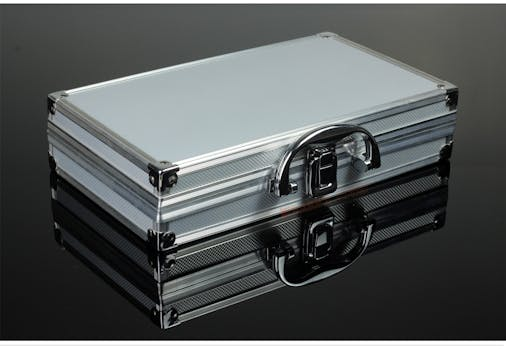

Vibe Coding 不是潮流，是你在 AI 時代的生存策略
本文是 YouTube 影片「為什麼你現在就該開始 Vibe Coding？工具人時代正在結束」的延伸閱讀版。 影片講了核心觀念，本文加上獨家實測和操作指南。 影片版本：https://www.youtube.com/watch?v=LGDQ3musYUQ
影片重點回顧
矽谷正在發生一件事：公司裁掉年薪 30 萬美金的工程師，把錢拿去買 GPU 算力卡。因為對公司來說，AI 的投資報酬率已經超過人了。
這不是個案，這是趨勢。幾千年來的價值創造鏈條——想法、資源、結果——人一直扮演「使用者」的角色，也就是工具人。但 AI 正在讓工具人這個角色消失。過去的科技革命只是部分自動化，AI 是通往全面自動化的起點。
出路只有一條：從工具人躍遷為擁有者。而 Vibe Coding——用自然語言跟 AI 協作解決實際問題——是現在最快的躍遷路徑。
【獨家】Vibe Coding 入門實戰：5 步驟開始你的第一個專案
Photo by Vanessa Garcia on Pexels
影片裡我講了 Vibe Coding 的三種形式（APP、工作流、提示詞），但沒有時間展開「具體怎麼開始」。這裡給你一套我實際帶企業學員操作過的 5 步驟框架：
Step 1：找到你的「痛點」
不要從「我想學 AI」開始。從「我每天花最多時間在什麼重複工作上」開始。
實際案例： - 業務每天花 2 小時整理客戶名單 → 用 AI 自動化 - 行銷每週花 3 小時寫社群貼文 → 用 AI 產出初稿 - 主管每月花 1 天做報告 → 用 AI 彙整數據
Step 2：選擇你的 AI 工具
不需要會寫程式。2026 年的 AI 工具已經強大到你只需要用自然語言描述需求：
| 場景 | 推薦工具 | 難度 |
|---|---|---|
| 做一個簡單 APP | Replit / Cursor | 中等 |
| 自動化工作流 | n8n / Make | 入門 |
| 文字處理 | ChatGPT / Claude | 入門 |
| 數據分析 | Gemini + Google Sheets | 入門 |
Step 3：用自然語言描述你要什麼
關鍵心態轉換：你不是在「學工具」，你是在「指揮 AI」。
差的指令：「幫我寫一個程式」 好的指令：「我是一個業務，每天要整理 50 個客戶的聯繫紀錄到 Google Sheets。請幫我設計一個自動化流程，讓我只需要在 LINE 上回報客戶姓名和拜訪結果，系統就自動更新到表格裡。」
Step 4：迭代改進（荒島求生心態）
第一版一定不完美，但不要放棄。每次跟 AI 的對話都是在「升級你的木筏」。
我的經驗：一個自動化工作流通常需要 3-5 輪對話才能調到滿意。但一旦完成，它每天幫你省 1-2 小時。
Step 5：分享你的成果
把你做出來的東西分享給同事或社群。這不只是炫耀，而是建立你作為「AI 時代先行者」的個人品牌。
【獨家】為什麼「先學工具再解決問題」是最大的陷阱
Photo by Zulfugar Karimov on Pexels
影片裡我提到很多人想當 YouTuber 就先去學 Final Cut Pro，這是錯的。但我沒有時間解釋背後的心理學原因。
這其實是一種「生產力拖延症」（Productivity Procrastination）。
你花了 20 小時學一個軟體，感覺自己很努力、很充實。但實際上你一個問題都沒解決，一個產品都沒做出來。你只是用「學習」的外衣包裝了「逃避真正挑戰」的行為。
AI 時代的正確路徑是：
- 先有問題（你想解決什麼？）
- 再找工具（哪個 AI 工具能幫你？）
- 邊做邊學（遇到不會的就問 AI）
這跟傳統的「先學再做」完全相反。但在 AI 時代，這才是最快的學習方式。因為 AI 就是你的即時教練——你問它任何問題，它都能給你答案。
【獨家】台灣企業導入 Vibe Coding 的 3 個真實案例

Photo by michale scot on Pexels我在企業培訓中已經看到一些公司開始導入 Vibe Coding 的思維：
案例 1：金融業——報告自動化 一家銀行的分析團隊，過去每月花 3 天做風險報告。導入 AI 工作流後，縮短到半天。關鍵不是技術，而是團隊願意改變「先手動 Excel 再用工具」的習慣。
案例 2：製造業——品管流程 一家電子廠用 AI 圖像辨識取代人工目檢。但真正的突破不是技術導入，而是品管主管學會用自然語言描述「什麼樣的產品算瑕疵」，讓 AI 理解判斷標準。
案例 3：零售業——客服回覆 一家電商的客服團隊，用 AI 生成客服回覆初稿。客服人員從「寫回覆的人」變成「審核 AI 回覆的人」，效率提升 3 倍。
這三個案例的共同點：不是在「用 AI 工具」，而是在「用 AI 思維重新設計工作流程」。這就是 Vibe Coding 的本質。
阿峰觀點
我在企業 AI 培訓時最常跟學員說：「你是機長，AI 是機組人員。」
很多人聽到 Vibe Coding 會覺得：「那不就是叫 AI 寫程式嗎？」不是的。Vibe Coding 的核心不是程式碼，而是你的思考方式。
你願不願意從「被分配工作的人」變成「定義問題的人」？你願不願意從「操作工具的人」變成「指揮 AI 團隊的人」？
這個轉變不需要你會寫程式，但需要你敢開始。
如果你跟我說你沒有問題要解決，那我會說：沒有問題，就是你在 AI 時代最大的問題。
本文提到的資源
| 工具 | 連結 | 說明 |
|---|---|---|
| ChatGPT | https://chatgpt.com | OpenAI 的 AI 助手 |
| Claude AI | https://claude.ai | Anthropic 的 AI 助手 |
| Gemini | https://gemini.google.com | Google 的 AI 助手 |
| Replit | https://replit.com | 線上 AI 輔助開發環境 |
| Cursor | https://cursor.com | AI 程式編輯器 |
| n8n | https://n8n.io | 自動化工作流工具 |
| Make | https://www.make.com | 自動化工作流工具 |
影片中提到的資源
| 資源 | 說明 |
|---|---|
| Vibe Coding 概念 | Andrej Karpathy 提出的 AI 輔助程式開發方式 |
延伸閱讀
- 10 個素人用 Claude Code 做出的真實產品｜最快 4.5 小時上線
- AI 時代創業不再靠資金，靠的是這六個步驟
- Claude 被封殺、Block 裁員一半：AI 時代職場生存指南（2026）
📌 2026 AI 實戰應用課 — 從觀念到落地，帶你真正用 AI 解決問題 → autolab.cloud/2026-ai-course
關於作者
黃敬峰（AI峰哥），企業 AI 實戰培訓專家，400+ 企業合作、10,000+ 學員。 核心心法：「會用、懂用、好用、每天用」 官網：https://www.autolab.cloud